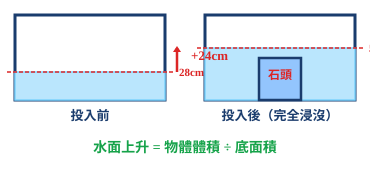

小明嘅屋企要搬家，搬屋公司嘅叔叔話貨車空間有限。爸爸話：「每個箱嘅體積都唔同！」
小明好奇：「面積同體積有咩分別呀？」爸爸解釋：「面積係平面嘅（地板），體積係立體嘅（成個空間）！」
💡 今日我哋學識咩係體積，同埋點樣計算長方體同正方體嘅體積！
小明嘅屋企要搬家，搬屋公司嘅叔叔話貨車空間有限。爸爸話：「每個箱嘅體積都唔同！」
小明好奇：「面積同體積有咩分別呀？」爸爸解釋：「面積係平面嘅（地板），體積係立體嘅（成個空間）！」
💡 今日我哋學識咩係體積，同埋點樣計算長方體同正方體嘅體積！
| # | 題目 | 難度 | 作答區（寫出完整計算過程） |
|---|---|---|---|
| 1 | 長方體 8×6×4 cm。體積 = ？ | 🌱 基礎 | |
| 2 | 正方體邊長 5 cm。體積 = ？ | 🌱 基礎 | |
| 3 | 長方體水箱 20×15×10 cm，最多可盛水多少 cm³？ | 🌱 基礎 | |
| 4 | 計算：12³ = ？（即 12×12×12） | 🌿 進階 | |
| 5 | 一個 L 形狀的立體（由兩個長方體組成），你打算怎樣計算它的體積？寫出你的方法。 | 🌿 進階 |
| # | 題目 | 難度 | 作答區 |
|---|---|---|---|
| 例1 | T 形複合立體：下層 12×8×3 cm，上層（中間豎起）6×8×5 cm。總體積 = ？（畫圖分割計算） | 🌿 | |
| 例2 | 階梯形立體（三層）：底層 10×5×2 cm，中層 8×5×2 cm，頂層 6×5×2 cm。總體積 = ？ | 🌿 | |
| 例3 | 用補足法求：一個長方體 8×6×5 cm，切去右上角（3×3×2 cm）。餘下體積 = ？ | 🌳 |
| # | 題目 | 難度 | 作答區 |
|---|---|---|---|
| 6 | L 形立體：底層 8×5×2 cm，上層在右側 3×5×3 cm。總體積 = ？ | 🌱 | |
| 7 | T 形立體：下橫 14×6×3 cm，上豎（中央）4×6×5 cm。總體積 = ？ | 🌿 | |
| 8 | 長方體 10×8×6 cm，切去一角（4×4×3 cm）。餘下體積 = ？ | 🌿 |
| # | 題目 | 難度 | 作答區 |
|---|---|---|---|
| 9 | 十字形複合立體：水平長方體 20×5×3 cm，垂直長方體 5×12×5 cm 穿過中心。總體積 = ？ | 🌳 | |
| 10 | 複合立體由正方體 A（邊長 8 cm）和正方體 B（邊長 5 cm）貼合而成（一面完全貼合）。總體積 = ？ | 🌿 | |
| 11 | 用 3 個相同的正方體（邊長 4 cm）排成一排黏貼。複合立體的總體積 = ？表面面積 = ？（注意黏貼面不計入 SA） | 🌳 |
| # | 題目 | 難度 | 作答區 |
|---|---|---|---|
| 例4 | 水箱 25×10×15 cm，原水深 5 cm。放入鐵塊後水位升至 9 cm。鐵塊體積 = ？ | 🌱 | |
| 例5 | 水箱底面積 200 cm²，原水深 6 cm。放入物體後水位升高了 4 cm。物體體積 = ？ | 🌿 | |
| 例6 | 水箱 30×20×20 cm，原水深 8 cm。放入體積 1200 cm³ 的物體（完全浸沒）。新水位 = ？ | 🌳 |
| # | 題目 | 難度 | 作答區 |
|---|---|---|---|
| 12 | 水箱 15×10×12 cm，原水深 3 cm。放入石塊後水位升至 8 cm。石塊體積 = ？ | 🌱 | |
| 13 | 水箱底面積 150 cm²，原水深 5 cm。放入金屬塊後水位上升了 6 cm。金屬塊體積 = ？ | 🌿 | |
| 14 | 水箱 40×25×30 cm，原水深 10 cm。放入體積 2000 cm³ 的物體。新水位 = ？ | 🌳 | |
| 15 | 正方體水箱邊長 20 cm，原水深 8 cm。放入一個邊長 10 cm 的正方體鐵塊（完全浸沒）。新水位 = ？ | 🌳 |
| # | 題目 | 難度 | 作答區 |
|---|---|---|---|
| 例7 | 水箱 15×10×8 cm，原水深 5 cm。放入體積 600 cm³ 的物體。水會溢出嗎？溢出多少？ | 🌳 | |
| 例8 | 水箱 30×20×15 cm，水深 12 cm。放入邊長 10 cm 的正方體鐵塊。水會溢出嗎？溢出多少？ | 🌳 | |
| 16 | 水箱 20×10×10 cm，原水深 7 cm。放入體積 500 cm³ 的物體。溢出水量 = ？ | 🌿 | |
| 17 | 水箱 25×20×12 cm，水深 10 cm。放入體積 800 cm³ 的物體。溢出水量 = ？ | 🌳 |

| # | 題目 | 難度 | 作答區 |
|---|---|---|---|
| 18 | L 形立體：底層 6×4×2 cm，上層右側 2×4×3 cm。總體積 = ？ | 🌱 | |
| 19 | 水箱 20×10×15 cm，原水深 5 cm。放入石塊後水位升至 9 cm。石塊體積 = ？ | 🌱 | |
| 20 | 長方體 15×10×8 cm，切去一角（5×5×4 cm）。餘下體積 = ？ | 🌱 | |
| 21 | 水箱底面積 120 cm²，原水深 4 cm。放入物體後水位上升了 5 cm。物體體積 = ？ | 🌿 | |
| 22 | 水箱 18×12×10 cm，水深 8 cm。有沒有空間再放入一個體積 360 cm³ 的物體而不溢出？ | 🌿 |
| # | 題目 | 難度 | 作答區 |
|---|---|---|---|
| 23 | 複合立體：正方體 A（邊長 6 cm）上面放正方體 B（邊長 4 cm，居中）。總體積 = ？ | 🌿 | |
| 24 | 水箱 30×20×25 cm，原水深 10 cm。放入體積 3000 cm³ 物體。新水位 = ？水會溢出嗎？ | 🌳 | |
| 25 | 正方體水箱邊長 15 cm，水深 10 cm。放入一個邊長 8 cm 的正方體鐵塊。新水位 = ？ | 🌳 | |
| 26 | 水箱 24×16×18 cm，水深 14 cm。放入邊長 6 cm 的正方體。溢出水量 = ？ | 🌳 | |
| 27 | 一個空水箱 20×15×12 cm。先注入 2400 cm³ 水，再放入一個體積 600 cm³ 的石頭。最終水深 = ？水溢出嗎？ | 🌳 |
| # | 題目 | 難度 | 作答區 |
|---|---|---|---|
| 28 | 一個 U 形複合立體（兩側各有一個正方體，中間以長方體連接）：左正方體邊長 5 cm，右正方體邊長 5 cm，中間連接長方體 8×5×3 cm。總體積 = ？ | 🌳 | |
| 29 | 水箱 50×30×40 cm，水深 25 cm。先放入 A 物體（體積 9000 cm³），再放入 B 物體（體積 6000 cm³）。最終水深 = ？過程中水有溢出嗎？如有，溢出多少？ | 🏔 | |
| 30 | 長方體水箱 30×20×15 cm，水深 10 cm。先取出 400 cm³ 的水，再放入一塊石頭（體積 700 cm³）。最終水深 = ？ | 🏔 |
| # | 題目 | 難度 | 作答區（列式 → 計算 → 答句） |
|---|---|---|---|
| 31 | 一個 L 形花槽由兩部分組成：底層長 100 cm、闊 40 cm、高 30 cm；上層在右側長 40 cm、闊 40 cm、高 50 cm。花槽的總體積是多少 cm³？合多少 m³？ | 🌿 | |
| 32 | 一個長方體魚缸內部長 50 cm、闊 30 cm、高 40 cm，原有水深 25 cm。放入一座假山（完全浸沒）後，水位升至 32 cm。假山的體積是多少 cm³？ | 🌿 | |
| 33 | 一個長方體水箱 40×25×20 cm，水深 15 cm。放入一塊體積 4000 cm³ 的石頭。(a) 水會溢出嗎？(b) 如有溢出，溢出多少 cm³？ | 🌳 | |
| 34 | 正方體水箱邊長 20 cm，原水深 12 cm。放入一個邊長 8 cm 的正方體金屬塊。(a) 金屬塊的體積 = ？(b) 水位上升了多少 cm？(c) 最終水深 = ？ | 🌳 | |
| 35 | 一個水缸內部長 60 cm、闊 40 cm、高 30 cm。缸內有水，水深 20 cm。把 5 個相同的正方體金屬塊（每個邊長 6 cm）全部放入水中。(a) 5 個金屬塊總體積 = ？(b) 水位會溢出嗎？(c) 最終水深 = ？ | 🌳 |
| # | 題目 | 難度 | 作答區 |
|---|---|---|---|
| 36 | 一個複合立體由一個長方體（20×10×8 cm）和一個正方體（邊長 6 cm）組成，正方體貼在長方體頂部的正中央。總體積 = ？ | 🌳 | |
| 37 | 水箱 35×25×18 cm，水深 12 cm。投入一個不規則石塊（完全浸沒）後，水深變為 16 cm。石塊體積 = ？如果把石塊取出後再放入一個體積為 2000 cm³ 的物體，水會溢出嗎？ | 🌳 |
| # | 題目 | 難度 | 作答區 |
|---|---|---|---|
| 🏔1 | 水箱 30×20×15 cm。先注入一些水，水深 h cm。放入一個邊長 10 cm 的正方體後，水位剛好滿（15 cm）且沒有溢出。求原有水深 h。 | 🏔 | |
| 🏔2 | 一個複合立體由三個正方體疊成（金字塔形）：底層正方體邊長 10 cm，中層邊長 7 cm，頂層邊長 4 cm，全部居中堆疊。(a) 總體積 = ？(b) 如果把這個複合立體放入一個裝有水的正方體水箱（邊長 15 cm，水深 8 cm），水會溢出嗎？溢出多少？（假設完全浸沒） | 🏔 | |
| 🏔3 | 水箱 A（30×20×15 cm，水深 10 cm）和水箱 B（25×15×12 cm，水深 7 cm）。從水箱 A 取出 1200 cm³ 水倒入水箱 B。(a) 水箱 A 的新水深 = ？(b) 水箱 B 的新水深 = ？(c) 水箱 B 有水溢出嗎？ | 🏔 |
| # | 題目 | 難度 | 作答區 |
|---|---|---|---|
| H1 | L 形立體：底層 10×6×4 cm，上層右側 4×6×3 cm。總體積 = ？ | 🌱 | |
| H2 | 水箱 25×12×15 cm，原水深 6 cm。放入石塊後水位升至 11 cm。石塊體積 = ？ | 🌿 | |
| H3 | 水箱 20×15×10 cm，水深 8 cm。放入體積 500 cm³ 的物體。水會溢出嗎？如有，溢出多少？ | 🌿 | |
| H4 | 長方體 18×12×10 cm，切去一角（6×4×5 cm）。餘下體積 = ？ | 🌿 | |
| H5 | 正方體水箱邊長 18 cm，水深 12 cm。放入邊長 6 cm 的正方體鐵塊。最終水深 = ？（精確至小數點後 1 位） | 🌳 |
| # | 題目 | 難度 | 作答區 |
|---|---|---|---|
| H6 | 水箱 40×20×25 cm，水深 15 cm。先放入 A 石（體積 3000 cm³），再取出 1000 cm³ 水，最後放入 B 石（體積 2000 cm³）。最終水深 = ？ | 🌳 | |
| H7 | 一個空水箱 30×20×18 cm。倒入 6 L 水（1 L = 1000 cm³），再放入邊長 8 cm 的正方體。最終水深 = ？水會溢出嗎？ | 🌳 |
| # | 題目 | 難度 | 作答區 |
|---|---|---|---|
| 38 | 一個球的半徑是 4 cm，穿過球心的截面面積是多少 cm²？（π 取 3.14） | 🌱 | |
| 39 | 一個球體的截面距離球心 3 cm，球的半徑是 5 cm。該截面的圓半徑是多少 cm？ 提示：截面半徑² = 球半徑² − 距離²，所以 √(5² − 3²) = 4 cm | 🌿 | |
| 40 | 以下哪個陳述是正確的？ A. 球的截面一定是圓形 ✅ B. 球的截面一定是半圓 ❌ C. 離球心越遠截面越大 ❌ D. 球的截面可以是正方形 ❌ | 🌱 |
| # | 題目 | 難度 | 作答區 |
|---|---|---|---|
| 41 | 一個圓柱的底面半徑是 3 cm，高是 8 cm。它的側面展開圖的長和闊各是多少 cm？（π 取 3.14） | 🌱 | |
| 42 | 一個圓柱側面展開圖是一個長方形，長 18.84 cm，闊 10 cm。這個圓柱的底面直徑和高各是多少？（π 取 3.14） | 🌿 | |
| 43 | 以下哪個圖形不能摺成一個正方體？ A. 141型 ✅ B. 231型 ✅ C. 222型 ✅ D. 四個正方形排成一排再加兩個在側面 ❌ | 🌱 |
| # | 易錯點 | 正確做法 |
|---|---|---|
| 1 | 複合立體當完整長方體計：L 形直接用外圍尺寸相乘 | 必須分割成幾個簡單立體，各自計算後加總 |
| 2 | 分割後重疊部分重複計算：兩個分割塊的重疊區域算了兩次 | 分割線必須在邊界，確保各塊互不重疊 |
| 3 | 排水法用錯水位：V = 底面積 × 新水位（錯！） | V = 底面積 × (新水位 − 原水位) = 底面積 × 水位差 |
| 4 | 溢出問題不檢查：直接套排水公式，沒檢查理論水位是否超過容器高度 | 第一步先計可用空間；第二步判斷是否溢出；第三步才計溢出量 |
| 5 | 底面積取錯：用了物體的底面積而非容器的底面積 | 排水法公式中的底面積是容器的底面積，不是物體的 |
| 6 | 單位混淆：L（升）和 cm³ 之間忘記轉換（1 L = 1000 cm³） | 所有體積先統一為 cm³，最後才轉換所需單位 |
| 7 | 多次操作（加水、取水、放物體）次序混亂 | 按時間順序分步計算，每一步求出新水位後再做下一步 |
| 8 | 球的截面說成半圓：認為球切開是半圓形 | 球的任何截面都是圓形（不是半圓），通過球心的是最大圓 |
| 9 | 圓柱展開圖用直徑代替圓周：側面展開的長方形長度寫成直徑 | 側面展開圖的長 = 底面圓周 = π × d，不是 d 本身 |
| 10 | 正方體展開圖判斷錯誤：以為任意 6 個正方形都能摺成正方體 | 正方體只有 11 種展開圖。四個排成一排的一定不行（4 排直線無法摺合） |
| # | 題目 | 答案 |
|---|---|---|
| 1 | 長方體 8×6×4 cm。體積 = ？ | 問老師 |
| 2 | 正方體邊長 5 cm。體積 = ？ | 問老師 |
| 3 | 長方體水箱 20×15×10 cm，最多可盛水多少 cm³？ | 問老師 |
| 4 | 計算：12³ = ？（即 12×12×12） | 問老師 |
| 5 | 一個 L 形狀的立體（由兩個長方體組成），你打算怎樣計算它的體積？寫出你的方法。 | 問老師 |